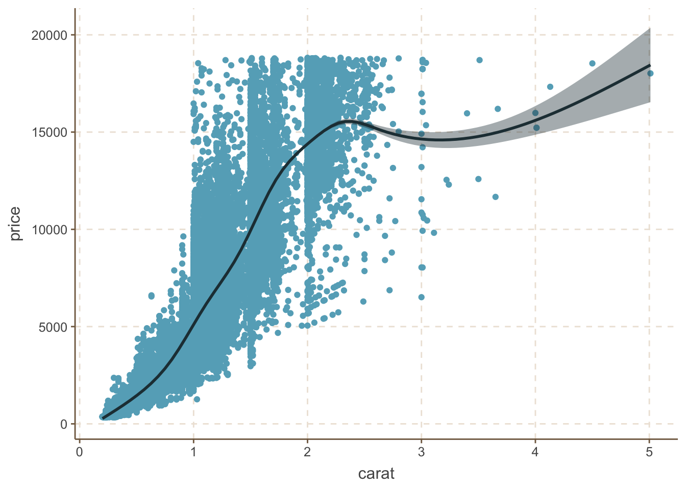
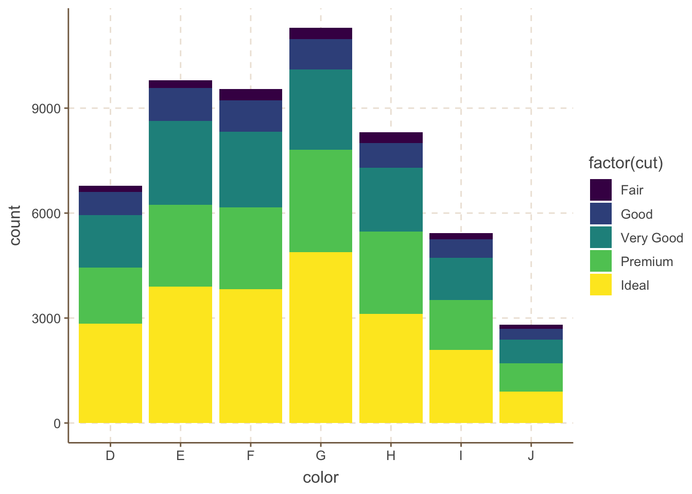

Chapter 2 ggplot2
一般基础的画图R有自己的基础图形系统，例如graphics包，grid包等。或者lattice包。不过这里要介绍的ggplot2它是一个有着完整的一套图形语法所支持的软件包，其语法基于《Grammar of Graphics》（Wilkinson，2005）一书。该绘图包的特点在于并不去定义具体的图形（如直方图，散点图），而是定义各种底层组件（如线条、方块）来合成复杂的图形，这使它能以非常简洁的函数构建各类图形，而且默认条件下的绘图品质就能达到出版要求。
首先在ggplot2的语法中，有几个概念需要了解：
图层（Layer）：图层允许用户一步步的构建图形，方便单独对图层进行修改、增加、甚至改动数据。
标度（Scale）：标度是一种函数，它控制了数学空间到图形元素空间的映射。一组连续数据可以映射到X轴坐标，也可以映射到一组连续的渐变色彩。一组分类数据可以映射成为不同的形状，也可以映射成为不同的大小。
坐标系统（Coordinate）：坐标轴可以进行变换以满足不同的需要，除直角坐标外还有对数坐标、极坐标等。
位面（Facet）：很多时候需要将数据按某种方法分组，分别进行绘图。位面就是控制分组绘图的方法和排列形式。
2.1 散点图
一般对于一系列观测值的图形描述，可以用散点图来直观表达。这里基本的散点图绘制可以使用qplot()函数。下面我们用ggplot2包中关于50000颗钻石的数据集diamonds来进行说明。
library(ggplot2)
qplot(carat, price, data = diamonds)
上图表示了钻石价格和重量的关系的散点图，因为有50000个数据，很多点都会重合在一起。在此基础上，可以添加对用颜色对钻石颜色和用不同的形状切工的信息进行区分：
qplot(carat, price, data = diamonds, colour = color)
qplot(carat, price, data = diamonds, shape = cut)当然还可以通过透明度的修改，来对重叠的部分进行一些区分。在qplot()中只需添加选项alpha=I(1/n)，其中n代表了该点经过多少次重合后会变得不再透明：
qplot(carat, price, data = diamonds, alpha = I(1 / 50))
对于密集散点，使用这种方法，就可以很容易的看出大部分点在哪里重叠，这种方式在散点图上点比较多的时候分辨重叠的点的时候有很好的帮助。
或者使用ggplot()函数中的二维直方图来表现：
p <- ggplot(diamonds, aes(carat, price))
p + stat_bin2d(bins = 100)
上图中，颜色的深浅代表了该部分大约有多少点重合。里面的bins选项值的大小决定了分块区域的大小。
除此之外，如果还需要对上述钻石数据按照颜色(color)或者切工(cut)在散点图如上加以区分的话，则需要用到ggplot()函数：
p <- ggplot(diamonds, aes(carat, price))
p + geom_point(aes(colour = cut, shape = cut, size = depth), alpha = 0.6, position = "jitter") + scale_size_area(max_size = 2)
为了展示数据的趋势，一般需要在散点图上面添加一条平滑的曲线。这里可以通过添加smooth对象传递给geom参数，它会将这些图按照顺序进行重叠：
qplot(carat, price, data = diamonds, geom = c("point", "smooth"))
另外还可以使用更全面的ggplot()函数加上geom_point()、geom_smooth()来实现上面的结果并作出更多诠释。例如想要在上面平滑的基础上分别对不同切工进行平滑并用颜色加以区分：
p <- ggplot(diamonds, aes(carat, price, colour = cut))
p + geom_point(alpha = 0.1) + geom_smooth()
2.2 条形图和箱线图
对于离散型变量，频数一般可以使用条形图来绘制，并且不需要像基础图形下面使用barchart先对数据进行汇总。这里直接使用geom=“bar”即可，并且如果需要对数据分组，可以使用wight来表达：
qplot(color, data = diamonds, geom = "bar")
qplot(color, data = diamonds, geom = "bar", weight = carat) + scale_y_continuous("carat")
此外，还可以对条形图分组并绘制不同类型的条形图。一般调整的参数有stack、dodge、fill、identity，stack方式是将不同年份数据堆叠放置；dodge方式是将不同年份的数据并列放置；fill方式和stack类似，但Y轴不再是计数，而是以百分比显示；identity方式是不做任何改变直接显示出来，所以需要设置透明度才能看得清楚,默认是stack：
p <- ggplot(data = diamonds, aes(x = color, fill = factor(cut)))
p + geom_bar(position = "stack")
p + geom_bar(position = "dodge")
p + geom_bar(position = "fill")p + geom_bar(position = "identity", alpha = 0.3)如果需要使用箱线图来描述连续变量在不同类别下面的变化情况可以使用箱线图来描述，参数为：geom=“boxplot”。例如研究不同颜色下每克拉钻石价格的分布情况:
qplot(color, price / carat, data = diamonds, geom = "boxplot")
又或者，使用ggplot()函数来进行绘制，还可以变成小提琴样式的箱线图。其中geom_violin()绘制小提琴图，geom_jitter()绘制扰动点图：
p <- ggplot(diamonds, aes(color, price / carat, fill = color))
p + geom_boxplot()
p + geom_violin(alpha = 0.8, width = 0.9) + geom_jitter(shape = 21, alpha = 0.03)
2.3 直方图和密度曲线图
一般对于连续性数据我们会只用直方图或者密度曲线图来绘制。这里只需在qplot()上面添加参数geom=“histogram”和geom=“density”。来进行实现。其中，直方图的组距使用binwidth参数来进行调整，密度曲线的平滑程度则使用adjust参数来进行设定：
qplot(carat, data = diamonds, geom = "histogram", binwidth = 1)
qplot(carat, data = diamonds, geom = "histogram", binwidth = 0.1)
qplot(carat, data = diamonds, geom = "histogram", binwidth = 0.01)
此外，还可以使用fill或colour参数指定分类的变量从而实现在同一图上使用不同颜色来标识不用种类的信息：
qplot(carat, data = diamonds, geom = "histogram", fill = cut)
qplot(carat, data = diamonds, geom = "density", colour = cut)
对于直方图和密度曲线图，还可以用ggplot()函数来绘制。也可以把上面两这个图合并在一起，以及加上更为复杂的参数：
p <- ggplot(diamonds, aes(carat))
p + geom_histogram(position = "identity", alpha = 0.3, aes(y = ..density.., fill = cut), color = "white") + stat_density(geom = "line", position = "identity", aes(colour = cut))2.4 时间序列图
对于时间序列数据绘图，其实就是绘制线条图，只需要添加参数geom=“line”即可。例如使用economics数据集绘制一个关于失业率的时间序列图：
qplot(date, uempmed, data = economics, geom = "line")
2.5 图形标注
在绘图步骤完成之后，一般还需要加上额外的文字和图形来标注。例如对于前面的失业率时间序列上加上每任美国总统就职的时间点：
(unemp <- qplot(date, uempmed, data = economics, geom = "line"))
presidential <- presidential[-(1:3), ]
unemp + geom_vline(aes(xintercept = as.numeric(start)), data = presidential)
或者这种标识比较单调，我们也可以用对不同总统任期的区域背景着色来进行区分：
library(scales)
xr <- range(economics$date)
yr <- range(economics$uempmed)
unemp + geom_rect(aes(NULL, NULL, xmin = start, xmax = end, fill = name), ymin = yr[1], ymax = yr[2], data = presidential, alpha = 0.2)
常用的基础绘图函数和ggplot2中图层的对照如下：
| 基础绘图函数 | ggplot2中的图层 |
|---|---|
| curve() | geom_curve() |
| hline() | geom_hline() |
| lines() | geom_line() |
| points() | geom_point() |
| polygon() | geom_polygon() |
| rect() | geom_rect() |
| rug() | geom_rug() |
| segments() | geom_segment() |
| text() | geom_text() |
| vline() | geom_vline() |
| abline(lm(y~x)) | geom_smooth(method=“lm”) |
| lines(density(x)) | geom_density() |
| lines(loess(x,y)) | geom_smooth() |